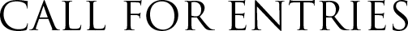
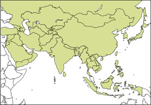

Конкурс проходит с 15 января
2020 по 10 Aпрель 2020 года
Правила конкурса
Nature’s Best Photography Asia приглашает всех фотографов, проживающих в любой точке мира участвовать в четвёртом ежегодном конкурсе фотографии Азии. Смотрите карту и список стран ниже, чтобы убедиться, что ваши фотографии имеют право на участие. Фотографии избранных победителей из «Nature's Best Photography Asia» будут выставлены на ежегодной выставке «Nature's Best Photography» в сентябре в Национальном музее и океанариуме «Чудеса дикой природы» (Wonders of Wildlife National Museum) в Спрингфилде, штат Миссури. Ежегодно выставку посещают 2 миллиона человек.
| Сроки проведения | с 15 января 2020 года по 10 Aпрель 2020 года |
| Страны, в которых сделана фотография |
Страны Азии (50 стран)Афганистан / Армения / Азербайджан / Бахрейн / Бангладеш / Бутан / Бруней / Бирма / Камбоджа / Китай / Грузия / Гонконг / Индия / Индонезия / Иран / Ирак / Израиль / Япония / Иордания / Казахстан / Корея, Южная / Кувейт / Кыргызстан / Лаос / Ливан / Макао / Малайзия / Мальдивские Острова / Монголия / Непал / Оман / Пакистан / Палестина / Филиппины / Катар / Россия / Саудовская Аравия / Сингапур / Шри-Ланка / Сирия / Тайвань / Таджикистан / Таиланд / Восточный Тимор / Турция / Туркменистан / Объединенные Арабские Эмираты / Узбекистан / Вьетнам / Йемен |
| Требования к фотографии | Любая фотография природы, сделанная в Азии в любой из пяти категорий, перечисленных ниже. |
Дикая природа
Дикие животные (млекопитающие, рептилии, амфибии и т. д. Птицы находятся в отдельной категории), сфотографированные в пределах их естественной среды обитания в любой точке Азии.
Пейзаж
Драматические сцены и необычные перспективы диких мест Азии, а также фотографии растительной жизни, такой как цветы, деревья и другая флора в их естественной среде обитания. Пожалуйста, укажите, если ваш снимок был сделан в специальной охраняемой зоне.
Океан
Мир моря, сфотографированный сверху, снизу и на поверхности океана: водоёмы, коралловые рифы, морская флора и фауна, волны, ландшафты, морские пейзажи и все существа, которым необходим океан для выживания. Все фотографии должны быть сделаны из вод, которые граничат с Азией.
Птицы
Дикие птицы в их родных местах обитания демонстрирующие оперение, ритуалы спаривания, территориальные сражения, гнездование, кормление, рождение и воспитание потомства или другое поведение, отношения взрослых с молодыми, портреты.
Маленький мир
Крупным планом растения, животные и миниатюрные ландшафты, сделанные с помощью микро / макрообъективов.
Видео
Видео высокой четкости стало важным инструментом для записи и распространения жизни дикой природы. В дополнение к неподвижным кадрам, редакторы в «Nature’s Best Photography Asia» ищут взгляды на природу и уличные впечатления глазами видеографов и кинематографистов. Расскажите нам свою историю, поделитесь своим любимым приключением.
| Награды | Главный приз: 1000 долларов, грамота, фотография будет выставлена в Национальном музее «Чудеса дикой природы». 6 победителей в каждой категории получат 500 долларов и грамоту. Их фотографии будут выставлены в Национальном музее «Чудеса дикой природы». 5 участников из каждой категории получат грамоту. Премия Lumix: камера Lumix. Премия Lumix: объектив SIGMA. Примечание: победитель в категории Дети не имеет права на денежный приз или выставку в Национальном музее «Чудеса дикой природы». |
| Вступительный взнос | За каждый вступительный взнос в размере 25 долларов вы можете отправить 20 изображений. |
| Выставка | Победители в каждой категории будут представлены на ежегодной выставке в Национальном музее «Чудеса дикой природы» (Wonders of Wildlife National Museum), в Спрингфилде, штат Миссури, США. Они также будут представлены на выставках по всей Азии. |
| Приглашения | Победившие фотографы будут приглашены на ежегодную церемонию вручения наград в Национальном музее естественной истории Смитсониана. Путевые расходы не включены. |
| Регистрация | Зарегистрироваться в конкурсе можно через сайт |
| АВТОРСКИЕ ПРАВА | Авторские права на фотографии принадлежат фотографам, фотографы вступают в конкурс по собственной воле. Для того, чтобы фотография была выбрана победителем, фотографы передаю неэксклюзивные права использования, позволяющие Nature's Best Publishing, LLC (NBP) и Best Photography Asia Asia (NBPA) следующие виды использования, включая, но не ограничиваясь ими: публикация фотографий в будущих выпусках журналов «Nature’s Best Photography» и «Nature’s Best Photography Asia», календаре, открытках и другой рекламной продукции, связанной с конкурсом; демонстрация на публичных выставках и на веб-сайте выставки и других веб-сайтах; использование изображений для продвижения соревнований NBP и NBPA. Неэксклюзивная передача прав предполагает возможность фотографу продавать изображение по своему усмотрению. NBP и NBPA не ограничивают будущие продажи изображения, NBP расширяет возможности для продажи фотографии в качестве победителя в очень престижном конкурсе. Многие фотографы обнаружили, что их продажи увеличиваются, в частности, от участия в конкурсах премий NBP. |
2020 Nature's Best Photography Asia Contest закончен приём участников
Загрузка изображений онлайн
Инструкция по загрузки фотографий:
Сделайте КОПИИ ваших исходных изображений в формате JPEG с низким разрешением (72 ppi) и размером не более 500 килобайт для каждого из изображений. В названии каждого файла должны присутствовать ваша фамилия и имя, название изображения и категория, разделяемые символами подчеркивания (Например: JohnDoe_fox_wildlife.jpg). Следуйте остальным инструкциям при загрузке.
Фотографам, прошедшим в финальный раунд, нужно будут предоставить файлы с высоким разрешением (и файлы RAW, если они есть, вы можете установить камеру в формат RAW или RAW / Jpeg для достижения наилучших результатов), полный заголовок и характеристики камеры перед окончательным судейством. Неспособность предоставить все запрошенные материалы может привести к дисквалификации. ПРИМЕЧАНИЕ: Информация о том, как отправлять файлы с высоким разрешением и сопроводительную подпись, будет предоставлена, если ваши изображения достигнут финального раунда.
ПРАВИЛА
ВСЕ ФОТО ДОЛЖНЫ быть оригинальнальными снимками, ничего не следует добавлять к изображению, кроме пылевых пятен ничего нельзя убирать. Стандартная обработка изображений RAW, небольшие корректировки цвета и контрастности и обрезка изображения приемлемы. Соединение HDR-фотографий и панорамная склейка разрешены, если все действия описаны в примечании к форме заявки. Участники не должны нарушать права любого другого фотографа или человека, правительственные постановления или частные разрешения на землю и НЕ ДОЛЖНЫ ЗАЯВЛЯТЬ НА КОНКУРС ИЗОБРАЖЕНИЯ ЖИВОТНЫХ В НЕВОЛЕ или участвовать в умышленном преследовании животных или повреждении окружающей среды. Несоблюдение всех положений конкурса приведет к дисквалификации.
ПРАВА И ИСПОЛЬЗОВАНИЕ ФОТОГРАФИЙ
Победившие фотографии могут быть опубликованы в книгах и журналах и проданы Nature’s Best Photography и ее филиалами в США (NBP), «Nature’s Best Photography Asia» (NBPA) и / или «Nature’s Best Photography japan» (NBPJ) и могут быть выбраны для выставки и других материалов продвижения Nature’s Best Photography» (NBPWSRIA), включая, сборники, календари, листовки, спонсорские презентации, электронные коллекции победителей и веб-страницы, содержащие информацию, обновления, правила NBPWSRIA и фотосоветы.
Конкурс NBPA открыт для всех фотографов, кроме сотрудников NBP, NBPA и NBPJ и их аффилированных лиц, включая сотрудников журнала «Nature’s Best Photography». Участвуя в этом конкурсе, вы соглашаетесь с тем, что ваши фотографии, ваше имя, профессия, город и государство проживания будут опубликованы в качестве избранных лауреатов в журналах «Nature’s Best Photography», печатных и цифровых выставках, мероприятиях и других публичных местах, опубликованных на веб-сайты, принадлежащие или находящиеся в альянсе с NBP, NBPA и NBPJ и / или NBPWSRIA в качестве победителей; и используются для продвижения NBPA и NBPJ и / или NBPWSRIA. Участники сохраняют право собственности и все другие права на свои фотографий. NBPA имеет право проверить право на участие в конкурсе. NBPA оставляет за собой право добавлять или удалять категории по своему усмотрению.
Правовые условия: вступая в этот конкурс, вы соглашаетесь с определенными правовыми условиями. Участники освобождают от ответственности NBP, NBPA и NBPJ (компании), их дочерние компании, аффилированные лица, директора, должностные лица, служащих, адвокатов, агентов и представителей от любой ответственности за любые травмы, потери, претензии, требования или ущерб любого рода, возникающие в связи с использованием фотографий участников.
Участник соглашается с тем, что любые споры и разногласия, возникшие в связи с этим конкурсом, разрешаются индивидуально, не прибегая к групповым искам, в суде расположенном в Токио, Япония. В любом таком споре участник ни при каких обстоятельствах не может претендовать на штрафные, случайные или косвенные убытки или любые другие убытки, включая гонорары адвокатов, за исключением фактических личных расходов участника (если таковые имеются), связанных с участием в конкурсе. Участник отказывается от всех прав на умножение или увеличение ущерба.
Любая попытка участника или другого лица умышленно повредить сайты компаний или подорвать законную деятельность компаний является нарушением уголовного и гражданского законодательства, и если такая попытка будет предпринята, компании оставляют за собой право в максимальной степени добиваться возмещения убытков разрешенных законом.
Компании не несут ответственности за какую-либо неправильную или неточную информацию, независимо от того, вызвана ли ошибка пользователем веб-сайта или каким-либо оборудованием или программным обеспечением, связанным или используемым в компаниях или в конкурсе, или любой технической или человеческой ошибки, которая может возникнуть при обработке информации, включая, но не ограничиваясь опечатками или типографскими ошибками. Компания не несет ответственности за любые ошибки, упущения, помехи, удаления, неисправности, задержки в работе или передаче, сбоя линии связи, кражи или уничтожения или несанкционированного доступа или изменения записей. Компания не несет ответственности за какие-либо проблемы или технические неисправности любой телефонной сети или линий, компьютерного оборудования, серверов, поставщиков, компьютерных он-лайн систем, программного обеспечения или сбоев электронной почты из-за технических проблем или перегруженности, в том числе повреждения или порчи компьютера участника или любого другого человека, связанного с участием или загрузки изображений или информации на этот конкурс.
Если по какой-либо причине NBPA не может быть завершена по плану, в том числе по причине заражения компьютерным вирусом, ошибок, несанкционированного вмешательства, мошенничества, технических сбоев или любых других причин, не зависящих от компаний, которые искажают или затрагивают администрирование, безопасность, полнота, честность или надлежащее проведение конкурса, компании оставляют за собой право по собственному усмотрению отменить, прекратить, изменить или приостановить конкурс. Ни при каких обстоятельствах компании, их дочерние компании, филиалы и связанные с ними компании, их рекламные агентства или их директора, должностные лица, сотрудники, адвокаты, агенты и представители не несут ответственности или ответственности за любые убытки или убытки любого рода, косвенные, случайные, штрафные убытки, возникающие в результате доступа участников к веб-сайтам компаний и их использования, а также для загрузки или выгрузки и / или печати материалов с указанных сайтов. Без ограничения вышеизложенного все на сайтах компаний предоставляется «как есть» без каких-либо гарантий, явных или подразумеваемых. В некоторых юрисдикциях не допускается ограничение или исключение ответственности за случайный или косвенный ущерб, поэтому некоторые из вышеперечисленных ограничений или исключений могут не относиться к вам. Проверьте свои местные законы на предмет каких-либо ограничений или ограничений в отношении этих ограничений или исключений.